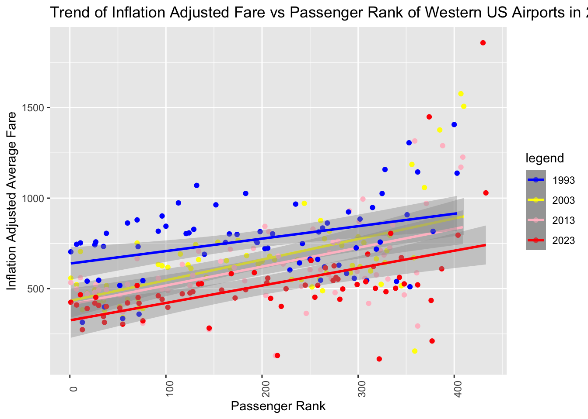
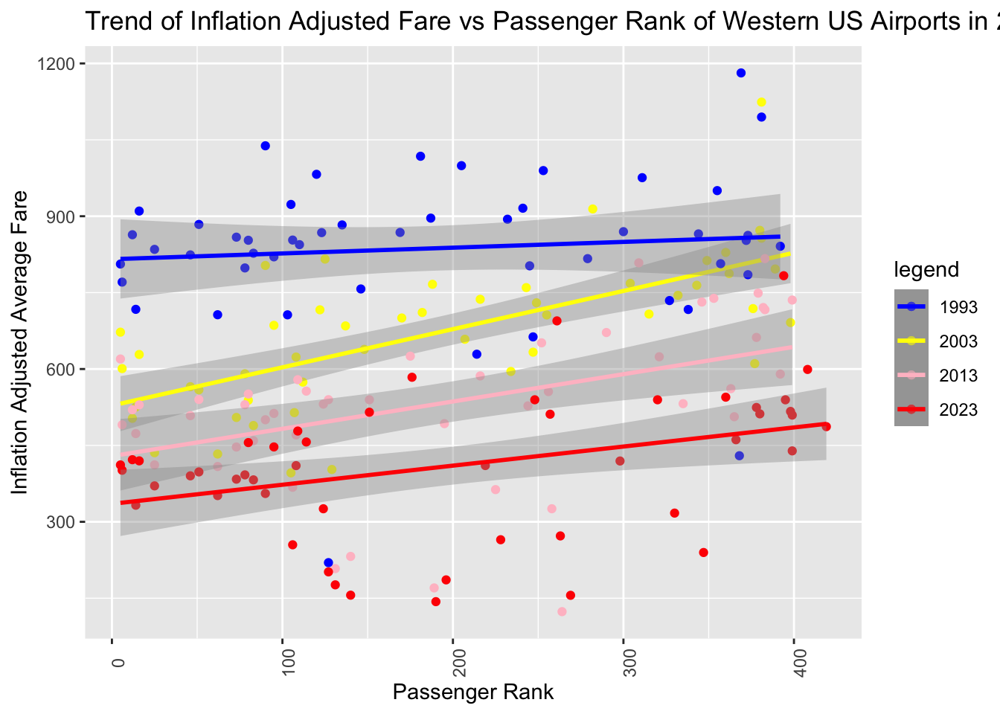
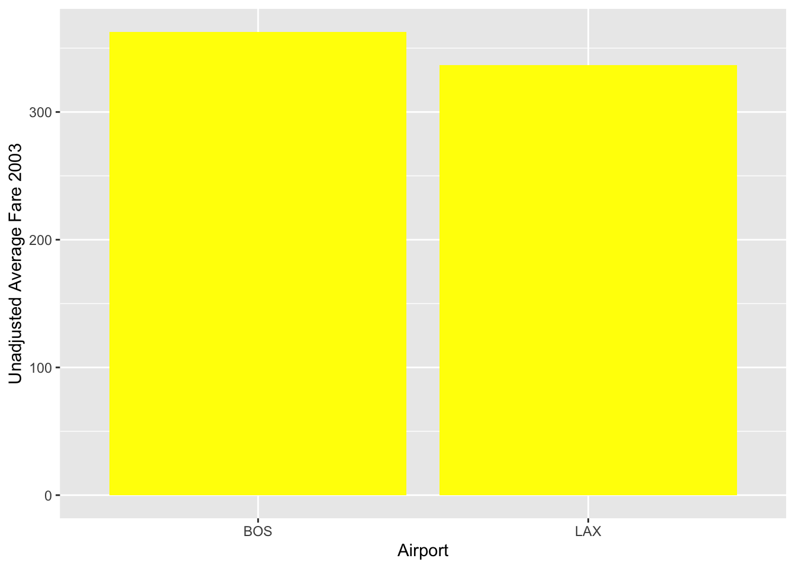
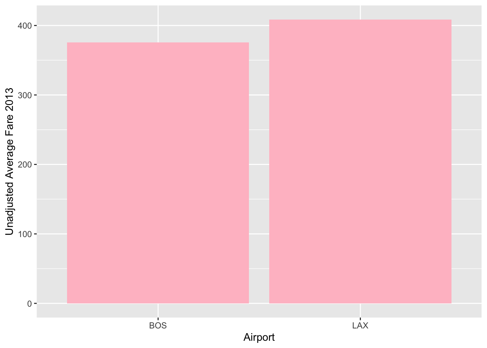
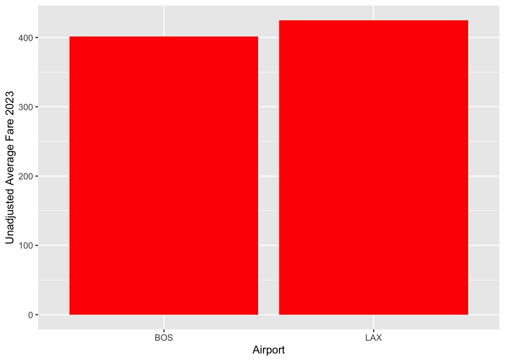
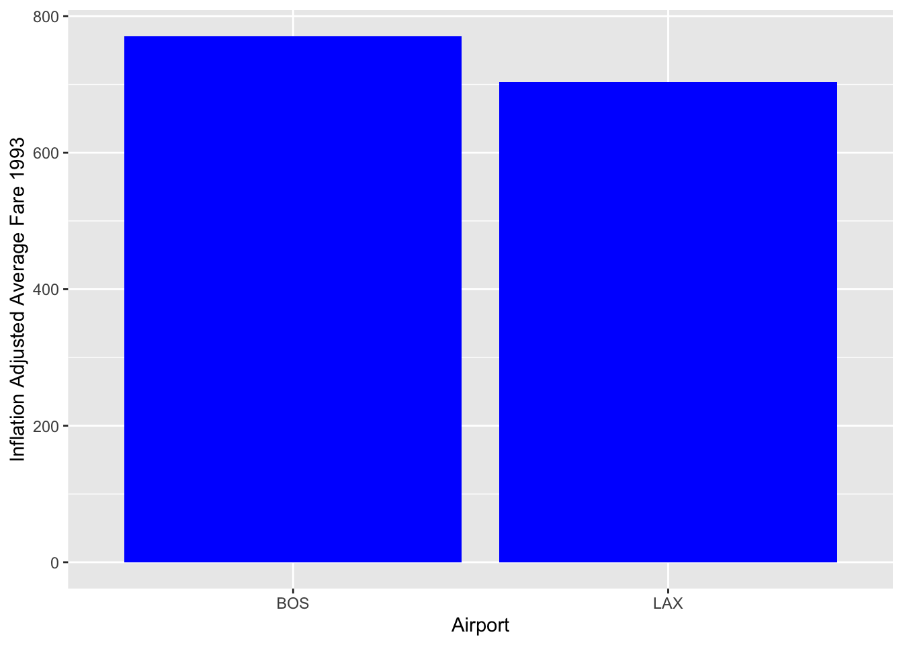
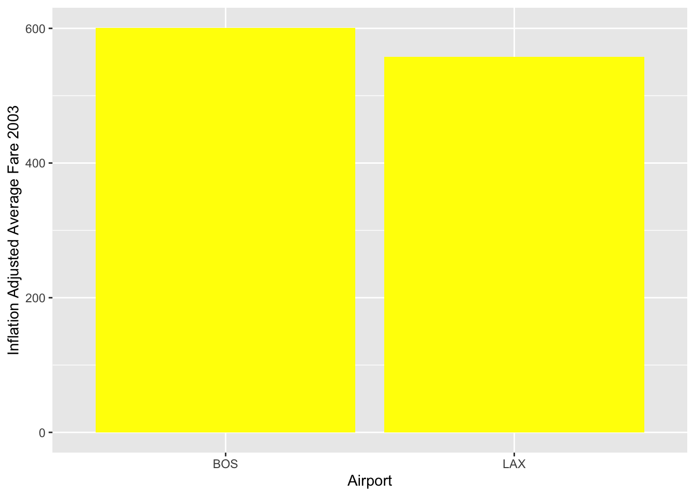
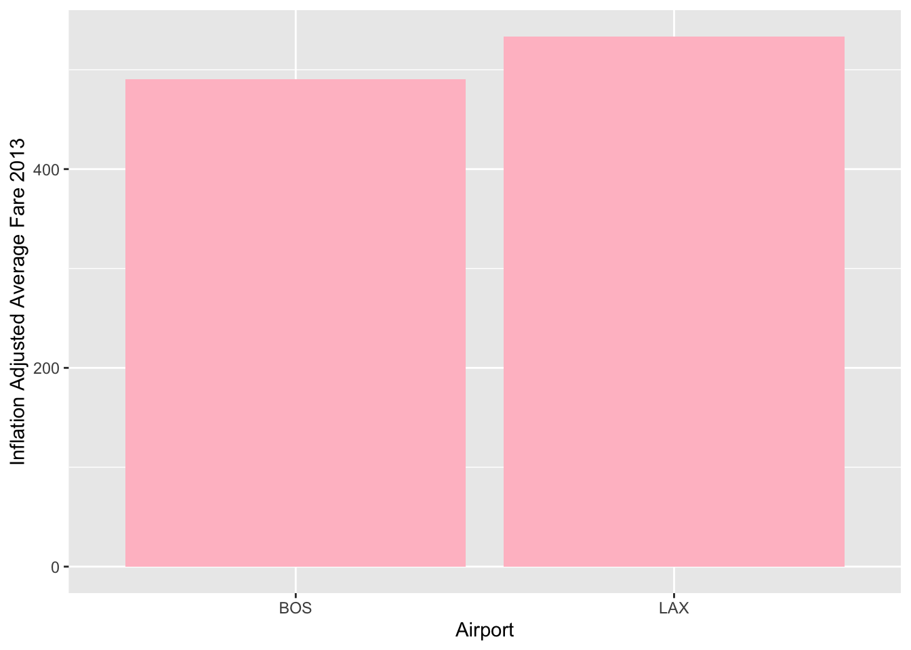
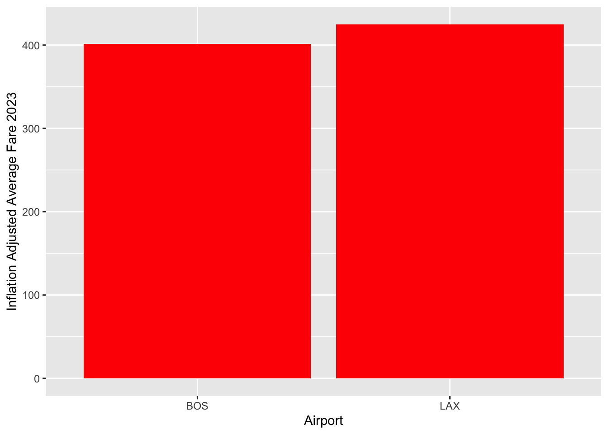

library(dplyr)
Attaching package: 'dplyr'The following objects are masked from 'package:stats':
filter, lagThe following objects are masked from 'package:base':
intersect, setdiff, setequal, unionlibrary(data.table)
Attaching package: 'data.table'The following objects are masked from 'package:dplyr':
between, first, lastlibrary(tidyverse)── Attaching core tidyverse packages ──────────────────────── tidyverse 2.0.0 ──
✔ forcats 1.0.0 ✔ readr 2.1.4
✔ ggplot2 3.4.3 ✔ stringr 1.5.0
✔ lubridate 1.9.2 ✔ tibble 3.2.1
✔ purrr 1.0.2 ✔ tidyr 1.3.0── Conflicts ────────────────────────────────────────── tidyverse_conflicts() ──
✖ data.table::between() masks dplyr::between()
✖ dplyr::filter() masks stats::filter()
✖ data.table::first() masks dplyr::first()
✖ lubridate::hour() masks data.table::hour()
✖ lubridate::isoweek() masks data.table::isoweek()
✖ dplyr::lag() masks stats::lag()
✖ data.table::last() masks dplyr::last()
✖ lubridate::mday() masks data.table::mday()
✖ lubridate::minute() masks data.table::minute()
✖ lubridate::month() masks data.table::month()
✖ lubridate::quarter() masks data.table::quarter()
✖ lubridate::second() masks data.table::second()
✖ purrr::transpose() masks data.table::transpose()
✖ lubridate::wday() masks data.table::wday()
✖ lubridate::week() masks data.table::week()
✖ lubridate::yday() masks data.table::yday()
✖ lubridate::year() masks data.table::year()
ℹ Use the conflicted package (<http://conflicted.r-lib.org/>) to force all conflicts to become errorslibrary(ggplot2)
library(readxl)
set1 <- read_excel('1993f.xls')New names:
• `` -> `...2`
• `` -> `...3`
• `` -> `...4`
• `` -> `...5`
• `` -> `...6`
• `` -> `...7`
• `` -> `...8`set2 <- read_excel('2003f.xls')New names:
• `` -> `...2`
• `` -> `...3`
• `` -> `...4`
• `` -> `...5`
• `` -> `...6`
• `` -> `...7`
• `` -> `...8`set3 <-read_excel('2013f.xls')New names:
• `` -> `...2`
• `` -> `...3`
• `` -> `...4`
• `` -> `...5`
• `` -> `...6`
• `` -> `...7`
• `` -> `...8`set4 <- read_excel('2023f.xls')New names:
• `` -> `...2`
• `` -> `...3`
• `` -> `...4`
• `` -> `...5`
• `` -> `...6`
• `` -> `...7`
• `` -> `...8`names(set1) <- set1[1,] # the data loaded with "header" included as data, so fixing thatWarning: The `value` argument of `names<-` must be a character vector as of tibble
3.0.0.set1 <- set1[-1,]
names(set2) <- set2[1,]
set2 <- set2[-1,]
names(set3) <- set3[1,]
set3 <- set3[-1,]
names(set4) <- set4[1,]
set4 <- set4[-1,]
names(set1)[names(set1) == "Average Fare ($)"] <- "Avg_1993"
colnames(set1)[7]<- "Adjusted_Avg_Fare_Q2_1993"
colnames(set1)[2]<- "Airport"
colnames(set1)[1]<- "PassRank_1993"
colnames(set1)[8]<- "_1993v2022_Passengers"
names(set2)[names(set2) == "Average Fare ($)"] <- "Avg_2003"
colnames(set2)[7]<- "Adjusted_Avg_Fare_Q2_2003"
colnames(set2)[2]<- "Airport"
colnames(set2)[1]<- "Pass_Rank_2003"
colnames(set2)[8]<- "_2003v2022_Passengers"
names(set3)[names(set3) == "Average Fare ($)"] <- "Avg_2013"
colnames(set3)[7]<- "Adjusted_Avg_Fare_Q2_2013"
colnames(set3)[2]<- "Airport"
colnames(set3)[1]<- "Pass_Rank_2013"
colnames(set3)[8]<- "_2013v2022_Passengers"
names(set4)[names(set4) == "Average Fare ($)"] <- "Avg_2023"
colnames(set4)[7]<- "Adjusted_Avg_Fare_Q2_2023"
colnames(set4)[2]<- "Airport"
colnames(set4)[1]<- "Pass_Rank_2023"
colnames(set4)[8]<- "_2023v2022_Passengers"
# Filter out records with missing or 0 values in '_1993v2022_Passengers'
set1 <- set1[complete.cases(set1$`_1993v2022_Passengers`) & set1$`_1993v2022_Passengers` != 0, ]
# Filter out records with missing or 0 values in '_2003v2022_Passengers'
set2 <- set2[complete.cases(set2$`_2003v2022_Passengers`) & set2$`_2003v2022_Passengers` != 0, ]
# Filter out records with missing or 0 values in '_2013v2022_Passengers'
set3 <- set3[complete.cases(set3$`_2013v2022_Passengers`) & set3$`_2013v2022_Passengers` != 0, ]
# Filter out records with missing or 0 values in '_2023v2022_Passengers'
set4 <- set4[complete.cases(set4$`_2023v2022_Passengers`) & set4$`_2023v2022_Passengers` != 0, ]
trx1 <- merge(set1, set2, by=c('Airport', 'Airport Name', 'City Name', 'State Name'))
dim(trx1)[1] 403 12trx2 <- merge(set3, set4, by=c('Airport', 'Airport Name', 'City Name', 'State Name'))
dim(trx2)[1] 408 12trx <- merge(trx1, trx2, by=c('Airport', 'Airport Name', 'City Name', 'State Name'))
#Change Variable TYpe
trx$PassRank_1993 = as.numeric(as.character(trx$PassRank_1993))
trx$Adjusted_Avg_Fare_Q2_1993 = as.numeric(as.character(trx$Adjusted_Avg_Fare_Q2_1993))
trx$Pass_Rank_2003 = as.numeric(as.character(trx$Pass_Rank_2003))
trx$Adjusted_Avg_Fare_Q2_2003 = as.numeric(as.character(trx$Adjusted_Avg_Fare_Q2_2003))
trx$Pass_Rank_2013 = as.numeric(as.character(trx$Pass_Rank_2013))
trx$Adjusted_Avg_Fare_Q2_2013 = as.numeric(as.character(trx$Adjusted_Avg_Fare_Q2_2013))
trx$Pass_Rank_2023 = as.numeric(as.character(trx$Pass_Rank_2023))
trx$Adjusted_Avg_Fare_Q2_2023 = as.numeric(as.character(trx$Adjusted_Avg_Fare_Q2_2023))
trx$Avg_1993 = as.numeric(as.character(trx$Avg_1993))
trx$Avg_2003 = as.numeric(as.character(trx$Avg_2003))
trx$Avg_2013 = as.numeric(as.character(trx$Avg_2013))
trx$Avg_2023 = as.numeric(as.character(trx$Avg_2023))
#Add Geographic Data
library(purrr)
trx<-modify_if(trx, ~is.numeric(.), ~round(., 3))
trx <- na.omit(trx)
airports <- read_csv('us-airports.csv')Rows: 30598 Columns: 23
── Column specification ────────────────────────────────────────────────────────
Delimiter: ","
chr (23): id, ident, type, name, latitude_deg, longitude_deg, elevation_ft, ...
ℹ Use `spec()` to retrieve the full column specification for this data.
ℹ Specify the column types or set `show_col_types = FALSE` to quiet this message.gps <- airports %>%
select(local_code, latitude_deg, longitude_deg)
names(gps) <- gps[1,]
gps <- gps[-1,]
colnames(gps)[1]<- "Airport"
colnames(gps)[2]<- "lat"
colnames(gps)[3]<- "lon"
trx <- merge(trx, gps, by=c('Airport'))
trx <- trx %>% drop_na(`Airport Name`) #drop rows missing aiport name (from og trx)'
trx$lat = as.numeric(as.character(trx$lat))
trx$lon = as.numeric(as.character(trx$lon))
#Check Dataset
check <- trx %>%
select(Avg_1993, Avg_2003, Avg_2013, Avg_2023) %>%
mutate(check.adj.93 = (Avg_1993) *2.13,
check.adj.03 = (Avg_2003) * 1.67,
check.adj.13 = (Avg_2013) * 1.32,
check.adj.23 = (Avg_2023)* 1)
trx <- merge(trx, check, by=c('Avg_1993', 'Avg_2003', 'Avg_2013', 'Avg_2023'))
trx %>%
select(Adjusted_Avg_Fare_Q2_1993,check.adj.93, Adjusted_Avg_Fare_Q2_2003, check.adj.03, Adjusted_Avg_Fare_Q2_2013, check.adj.13, Adjusted_Avg_Fare_Q2_2023, check.adj.23)%>%
slice(1:5) Adjusted_Avg_Fare_Q2_1993 check.adj.93 Adjusted_Avg_Fare_Q2_2003 check.adj.03
1 219.846 221.9758 402.720 406.0605
2 267.383 269.9732 393.425 396.6885
3 281.144 283.8672 385.678 388.8779
4 283.787 286.5361 400.977 404.3037
5 286.958 289.7375 379.557 382.7055
Adjusted_Avg_Fare_Q2_2013 check.adj.13 Adjusted_Avg_Fare_Q2_2023 check.adj.23
1 208.124 210.4159 176.255 176.255
2 544.805 550.8070 461.966 461.966
3 457.750 462.7933 392.579 392.579
4 516.517 522.2078 443.932 443.932
5 439.538 444.3806 355.561 355.561# Results
trx %>%
filter(Airport== "LAX"| Airport== "BOS") %>%
select(Airport, Pass_Rank_2023, Pass_Rank_2013, Pass_Rank_2003, PassRank_1993) Airport Pass_Rank_2023 Pass_Rank_2013 Pass_Rank_2003 PassRank_1993
1 LAX 1 1 1 1
2 BOS 6 6 6 6names(trx)[names(trx) == "State Name"] <- "State"
west <- trx %>%
filter(State=="CA"|State=="AK"|State=="WA"|State=="ID"|State=="OR"|State=="NV"|State=="UT")
west %>%
ggplot()+
geom_point(mapping = aes(x = Pass_Rank_2003 , y = Adjusted_Avg_Fare_Q2_2003, color = "2003")) +
geom_smooth(mapping = aes(x = Pass_Rank_2003 , y = Adjusted_Avg_Fare_Q2_2003, color = "2003"), method = "lm")+
geom_point(mapping = aes(x = Pass_Rank_2013 , y = Adjusted_Avg_Fare_Q2_2013, color = "2013" )) +
geom_smooth(mapping = aes(x = Pass_Rank_2013 , y = Adjusted_Avg_Fare_Q2_2013, color = "2013"), method = "lm")+
theme(axis.text.x = element_text(angle = 90)) +
labs(title = "Trend of Inflation Adjusted Fare vs Passenger Rank of Western US Airports in 2003")+
geom_point(mapping = aes(x = PassRank_1993 , y = Adjusted_Avg_Fare_Q2_1993, color = "1993")) +
geom_smooth(mapping = aes(x = PassRank_1993 , y = Adjusted_Avg_Fare_Q2_1993, color = "1993"), method = "lm")+
geom_point(mapping = aes(x = Pass_Rank_2023 , y = Adjusted_Avg_Fare_Q2_2023, color = "2023")) +
geom_smooth(mapping = aes(x = Pass_Rank_2023 , y = Adjusted_Avg_Fare_Q2_2023, color = "2023"), method = "lm")+
xlab(label = "Passenger Rank") +
ylab(label = "Inflation Adjusted Average Fare")+
scale_color_manual(name="legend",values = c("blue","yellow","pink","red"))`geom_smooth()` using formula = 'y ~ x'
`geom_smooth()` using formula = 'y ~ x'
`geom_smooth()` using formula = 'y ~ x'
`geom_smooth()` using formula = 'y ~ x'
east <- trx %>%
filter(State=="NY"|State=="PA"|State=="MD"|State=="DE"|State=="NJ"|State=="CT"|State=="RI"|State=="VT"|State=="MA"|State=="NH"|State=="ME")
east %>%
ggplot()+
geom_point(mapping = aes(x = Pass_Rank_2003 , y = Adjusted_Avg_Fare_Q2_2003, color = "2003")) +
geom_smooth(mapping = aes(x = Pass_Rank_2003 , y = Adjusted_Avg_Fare_Q2_2003, color = "2003"), method = "lm")+
geom_point(mapping = aes(x = Pass_Rank_2013 , y = Adjusted_Avg_Fare_Q2_2013, color = "2013" )) +
geom_smooth(mapping = aes(x = Pass_Rank_2013 , y = Adjusted_Avg_Fare_Q2_2013, color = "2013"), method = "lm")+
theme(axis.text.x = element_text(angle = 90)) +
labs(title = "Trend of Inflation Adjusted Fare vs Passenger Rank of Western US Airports in 2003")+
geom_point(mapping = aes(x = PassRank_1993 , y = Adjusted_Avg_Fare_Q2_1993, color = "1993")) +
geom_smooth(mapping = aes(x = PassRank_1993 , y = Adjusted_Avg_Fare_Q2_1993, color = "1993"), method = "lm")+
geom_point(mapping = aes(x = Pass_Rank_2023 , y = Adjusted_Avg_Fare_Q2_2023, color = "2023")) +
geom_smooth(mapping = aes(x = Pass_Rank_2023 , y = Adjusted_Avg_Fare_Q2_2023, color = "2023"), method = "lm")+
xlab(label = "Passenger Rank") +
ylab(label = "Inflation Adjusted Average Fare")+
scale_color_manual(name="legend",values = c("blue","yellow","pink","red"))`geom_smooth()` using formula = 'y ~ x'
`geom_smooth()` using formula = 'y ~ x'
`geom_smooth()` using formula = 'y ~ x'
`geom_smooth()` using formula = 'y ~ x'
LAX.BOS<-trx %>%
filter(Airport== "LAX"|Airport== "BOS") %>%
select(Airport, Adjusted_Avg_Fare_Q2_1993,Adjusted_Avg_Fare_Q2_2003,Adjusted_Avg_Fare_Q2_2013,Adjusted_Avg_Fare_Q2_2023, Avg_1993, Avg_2003, Avg_2013, Avg_2023,Pass_Rank_2023, Pass_Rank_2013, Pass_Rank_2003, PassRank_1993)
LAX.BOS %>%
ggplot()+
geom_bar(aes(y=Avg_1993, x = Airport), stat= "identity", fill = "blue")+
xlab(label = "Airport") +
ylab(label = "Unadjusted Average Fare 1993")LAX.BOS %>%
ggplot()+
geom_bar(aes(y=Avg_2003, x = Airport), stat= "identity", fill = "yellow")+
xlab(label = "Airport") +
ylab(label = "Unadjusted Average Fare 2003")
LAX.BOS %>%
ggplot()+
geom_bar(aes(y=Avg_2013, x = Airport), stat= "identity", fill = "pink")+
xlab(label = "Airport") +
ylab(label = "Unadjusted Average Fare 2013")
LAX.BOS %>%
ggplot()+
geom_bar(aes(y=Avg_2023, x = Airport), stat= "identity", fill = "red")+
xlab(label = "Airport") +
ylab(label = "Unadjusted Average Fare 2023")
LAX.BOS<-trx %>%
filter(Airport== "LAX"|Airport== "BOS") %>%
select(Airport, Adjusted_Avg_Fare_Q2_1993,Adjusted_Avg_Fare_Q2_2003,Adjusted_Avg_Fare_Q2_2013,Adjusted_Avg_Fare_Q2_2023, Avg_1993, Avg_2003, Avg_2013, Avg_2023,Pass_Rank_2023, Pass_Rank_2013, Pass_Rank_2003, PassRank_1993)
LAX.BOS %>%
ggplot()+
geom_bar(aes(y=Adjusted_Avg_Fare_Q2_1993, x = Airport), stat= "identity", fill = "blue")+
xlab(label = "Airport") +
ylab(label = "Inflation Adjusted Average Fare 1993")
LAX.BOS %>%
ggplot()+
geom_bar(aes(y=Adjusted_Avg_Fare_Q2_2003, x = Airport), stat= "identity", fill = "yellow")+
xlab(label = "Airport") +
ylab(label = "Inflation Adjusted Average Fare 2003")
LAX.BOS %>%
ggplot()+
geom_bar(aes(y=Adjusted_Avg_Fare_Q2_2013, x = Airport), stat= "identity", fill = "pink")+
xlab(label = "Airport") +
ylab(label = "Inflation Adjusted Average Fare 2013")
LAX.BOS %>%
ggplot()+
geom_bar(aes(y=Adjusted_Avg_Fare_Q2_2023, x = Airport), stat= "identity", fill = "red")+
xlab(label = "Airport") +
ylab(label = "Inflation Adjusted Average Fare 2023")
LAX.BOS <- LAX.BOS %>%
mutate(
comp_fare = Adjusted_Avg_Fare_Q2_1993 - Adjusted_Avg_Fare_Q2_2023)
LAX.BOS %>%
select(Airport, comp_fare) Airport comp_fare
1 LAX 278.577
2 BOS 369.449278.577 + 369.449 [1] 648.026library(leaflet)
library(devtools)Loading required package: usethislibrary(leaflet)
library(magrittr)
Attaching package: 'magrittr'
The following object is masked from 'package:purrr':
set_names
The following object is masked from 'package:tidyr':
extracttrx<-trx %>%
arrange(desc(Avg_2023))
max <- trx %>%
select(Avg_2023, lat, lon, Airport) %>%
filter(row_number() == 1)
min <- trx %>%
select(Avg_2023, lat, lon, Airport) %>%
filter(row_number() == 369)
leaflet() %>%
addProviderTiles('CartoDB.Positron') %>%
addCircles(
data = min,
lat = ~lat, lng = ~lon, popup = "Min Avg Fare.",
opacity = 1, fillOpacity = 1, radius = 400, color = "blue"
) %>%
addCircles(
data = max,
lat = ~lat, lng = ~lon, popup = "Max Avg Fare.",
opacity=1, fillOpacity=1, radius = 400, color = "red")